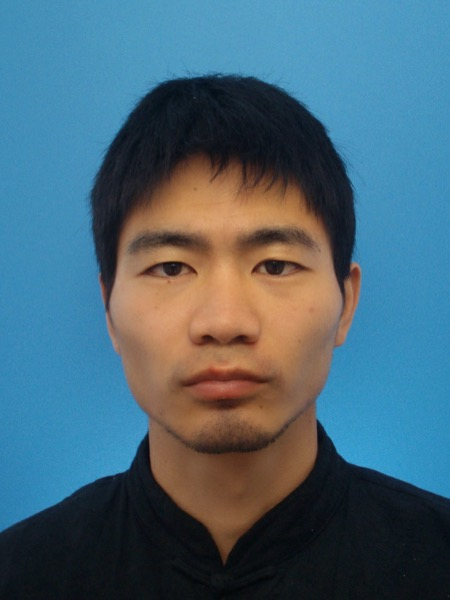
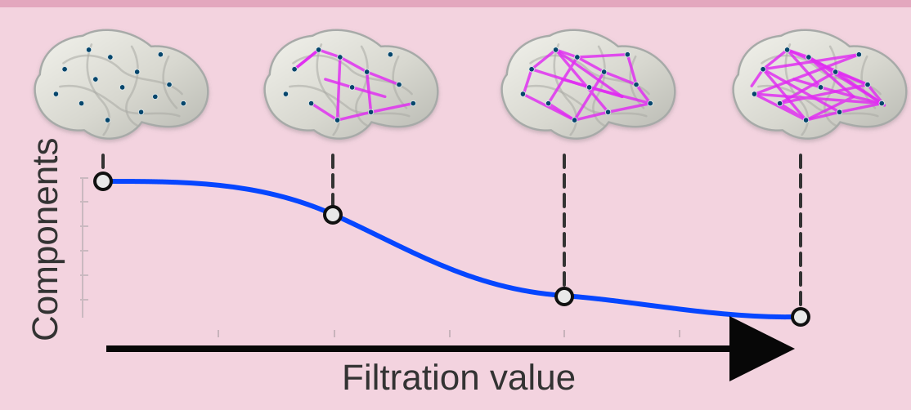
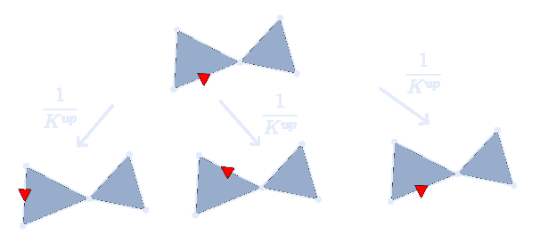
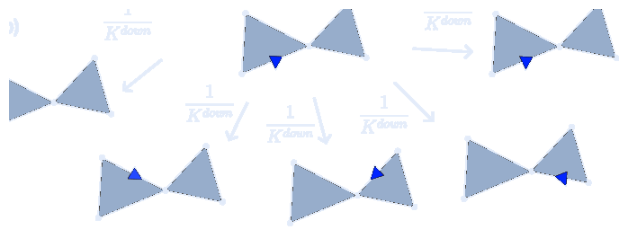
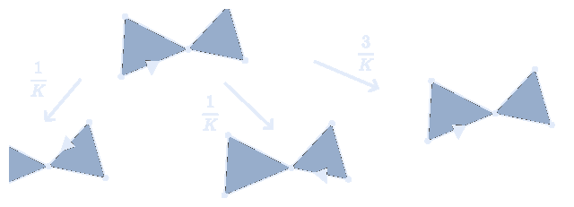
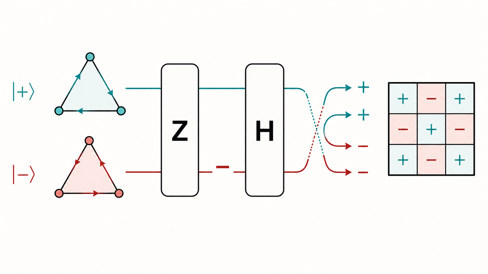

01 / 21
How quantum walks
see high-dimensional
structure
Quantum Walks on Simplicial Complexes and Harmonic Homology: Application to Topological Data Analysis with Superpolynomial Speedups
Authors
Kuo-Chin Chen
Foxconn Research
Min-Hsiu Hsieh
Foxconn Research
02 / 21
Problem
Graphs only capture pairwise interactions. The real shape of data is often higher-order.
Pairwise graph
Graphs represent observed pairwise links: which vertices are connected by selected edges.
Higher-dimensional object
Some correlations involve many points at once; representing them may require a higher-dimensional object.
03 / 21
Filtration
A filtration is a standard way to identify high-dimensional structure hidden in data.
From scale to structure
Instead of choosing one graph, grow a radius parameter. As scale increases, pairwise links, cycles, and filled higher-dimensional objects appear in a nested sequence.
Standard filtration picturescale increases left to right
04 / 21
Concrete example
Brain connectivity as a filtration example.
Brain connectivity study
Data
Brain regions become nodes; measured connectivity gives weighted links.
Filtration
Thresholds turn one weighted network into a nested sequence of complexes.
Signal
Cliques, loops, and higher-order holes become topological signatures, and these neuronal structures can be important for brain functionality.

05 / 21
Topological Data Analysis
TDA asks what survives as scale changes.
01
Start with a filtration
A filtration gives a nested sequence of complexes across radius or threshold.
02
Track birth and death
Components, cycles, voids, and higher-order holes appear, merge, fill, or disappear.
03
Return descriptors
Long-lived features become compact signatures of high-dimensional structure.
TDA goal
Separate stable high-dimensional signal from scale-specific noise.
06 / 21
Vocabulary bridge
Notation bridge: from Xk to βk.
Xk
k-simplices
the set of all k-simplices
→
Ck, ∂k
chains / boundary map
Ck = span(Xk)∂k: Ck → Ck-1
→
Zk, Bk
cycles / boundaries
Zk = ker ∂kBk = im ∂k+1
→
Hk
homology
the quotient group Zk/Bk
→
βk
Betti number
rank of Hk
07 / 21
Classical bottleneck
Why the main targets of TDA are hard classically.
βk/|Xk|
Normalized Betti
RoleEstimate the normalized k-dimensional hole count on a comparable scale.
Classical bottleneckInverse-polynomial normalized Betti estimation is DQC1-hard for general simplicial complexes.
βi,jk/|Xk|
Persistent Betti
RoleEstimate the robust features that persist across filtration level i to level j.
Classical bottleneckNo known efficient inverse-polynomial estimator.
Hk(X(G))≠0?
Promise clique homology
RoleTurn a graph problem into asking whether the clique complex has nontrivial Hk.
Classical bottleneckThe promise clique homology problem is QMA1-complete.
08 / 21
Main results
Quantum gate-count bounds.
βk/|Xk|
Normalized Betti
Accuracyadditive error ±ε
Gate costO(n3 log(1/ε))×1/λk
Gapλk ∈ Ω(1/poly(n))
βi,jk/|Xk|
Persistent Betti
Accuracyadditive error ±ε
Gate costÕ(n3 log(1/ε))×(1/λi,down + 1/λj,up)
Gapλi,down, λj,up ∈ Ω(1/poly(n))
Hk(X(G))≠0?
Promise clique homology
DecisionYES ≥ 1 − O(ε); NO ≤ O(ε)
Gate costO(n3 log(1/ε))×1/g(n)
Gapg(n) ≥ 1/poly(n)
09 / 21
Technical contribution
Implementation costs behind the main gate bounds.
All three bounds use the same projector-building pattern.
Uup, Udown, Uh
Walk unitaries
RoleBuild the walk unitaries from graph adjacency.
Gate costÕ(n2 log(1/ε))
ResultTheorem 4 gives an efficient implementation of the walk primitives.
Δ → Π
Laplacian + QSVT
RoleEncode the Laplacian and turn it into a projector.
Walk-unitary usesO(K log(1/ε))×1/λk
OutputK is the walk normalization factor; the projector depends on the application.
apply Π
Application readout
RoleAttach the target-specific readout to the projector.
Gate costO(n3 log(1/ε))×1/λk
BridgeThis is the reusable gate-count scale behind the application bounds.
10 / 21
Applications
High-dimensional Dirichlet: from boundary data to harmonic extension.
Given boundary values on a simplicial boundary, solve for a compatible interior signal with harmonic dynamics.
f∂ ↦ u
Boundary-value problem
TaskSolve Δku = 0 with fixed boundary data.
InputBoundary values f∂ on boundary k-simplices.
GoalProduce an interior signal u that is harmonic with the prescribed boundary data.

Proj(ker Δk)
Article result
RoleBuild the harmonic projector with the walk unitary and QSVT.
Gate costO(n3 log(1/ε))×1/λk
GapNeed λk ∈ Ω(1/poly(n)).
11 / 21
Positioning
This is not merely another QTDA algorithm; it connects quantum walks to Hodge topology.
Classical picture
- Recent classical work has built a genuine high-dimensional walk theory: up/down walks, Hodge Laplacians, and expander-style spectral analysis on simplicial complexes.
- These tools already describe mixing, geometry, and topology beyond ordinary graph random walks.
- So the real opening is not inventing high-dimensional structure from scratch, but carrying this mature picture into a quantum setting.
Earlier quantum picture
- Earlier quantum TDA often focused on matrix-access models, generic linear-algebra speedups, or oracle-based routines.
- Quantum walks on simplicial complexes existed, but their relation to harmonic homology was not yet the main message.
- The link from graph adjacency all the way to TDA-ready homology readout was still missing.
This paper
- Gives a rigorous relation between quantum walks and homology.
- Encodes the combinatorial Laplacian through orientation interference.
- Provides an efficient construction for clique complexes from graph adjacency.
12 / 21
Open directions
The most interesting next step is not just faster algorithms, but a richer language for how walks see topology.
Persistent Laplacian
Can we directly construct a quantum walk that projects onto persistent harmonic homology, rather than combining multiple projectors?
Beyond QSVT
Can quantum walk dynamics reveal low-energy or harmonic information without relying on QSVT?
High-dimensional expanders
Can the random-walk theory of high-dimensional expanders acquire a quantum counterpart?
Practical regimes
Which data families have efficient sampling, a reasonable gap, and a large enough normalized Betti signal?
13 / 21
Takeaway
Takeaway: one shared quantum pipeline turns hard TDA targets into explicit gate bounds.
Classical bottleneck
The three main TDA targets are already classically difficult: DQC1-hard, no known efficient inverse-polynomial estimator, and QMA1-complete.
Main results
The paper gives explicit quantum gate-count bounds for all three targets, with additive accuracy and the expected inverse-gap penalties.
Technical bridge
All three bounds come from one reusable pipeline.
walk unitaries → Laplacian encodings → QSVT projectors → target readout
14 / 21
Technical details
The proof route is a five-step pipeline that the next slides unpack one by one.
STEP 1
Define walk states with orientation
Use signed simplex states so the Laplacian sign structure can be represented coherently.
σ ∈ Xkq ∈ {+,−}|σ,q⟩ ∈ span(Xk±)Paper mapSetup: §1.2, §3.2
STEP 2
Build Uup, Udown, Uh
Construct the up, down, and harmonic quantum walk unitaries from the oriented transitions.
Uup → PupUdown → PdownUh → PPaper mapDefs. 2–4 (§3.2)
STEP 3
Turn walks into Laplacian encodings
Show these walk unitaries encode the relevant up, down, and full combinatorial Laplacians.
ΔkupΔkdownΔkPaper mapProps. 1–3 (§3.2)
STEP 4
Use QSVT to build projectors
Apply QSVT to obtain projectors onto the topology-relevant subspaces.
Proj(Zk)Proj(Bk)Proj(Zk)Proj(Bk)Proj(ℋk)Paper mapThm. 3 (§3.1)
STEP 5
Attach the application readout
Read out the quantity needed for normalized Betti, persistent Betti, or promise clique homology.
βk/|Xk|βki,j/|Xki|Hk(X(G)) = 0?Paper mapThms. 5–7 (§5)
15 / 21
Technical move
Step 1: one geometric simplex becomes two orientation states.
state representation
|σ,q⟩ = |xσ⟩ ⊗ |q⟩
Effect: the walk no longer sees only adjacency.It also carries whether a transition preserves or reverses orientation.
positive
q = + : positive orientation
negative
q = − : reversed orientation
SourceSetup §1.2, §3.2
16 / 21
Three walks
Step 2: build walks whose transition matrices encode the Laplacian pieces.
Up walk
unitary encoding: Uup → Pup

Move through a shared coface; this is the walk primitive for the up-Laplacian.
shared (k+1)-cofacetarget: Δkup
SourceDefinition 2 (§3.2)
Down walk
unitary encoding: Udown → Pdown

Move through a shared lower face; this is the walk primitive for the down-Laplacian.
shared (k−1)-facetarget: Δkdown
SourceDefinition 3 (§3.2)
Harmonic walk
unitary encoding: Uh → P

The harmonic walk encodes the full Δk used for kernel projection.
full Laplaciantarget: ℋk = ker Δk
SourceDefinition 4 (§3.2)
17 / 21
Algorithmic pipeline
Step 3: turn Uup, Udown, and Uh into Laplacian encodings.

INPUT
Projected walk encodings
Start from walk unitaries that encode Markov transition matrices.
Uup → Pup
Udown → Pdown
Uh → P
SourceDefinitions 2–4
INTERFERENCE
Z marks; H interferes
In HZ, Z acts first on the orientation qubit; H mixes the signed branches.
Z: |−⟩ → −|−⟩
H: interfere ±
SourceProofs of Propositions 1–3
OUTPUT
Laplacian encodings
The signed transition rule becomes the encoded combinatorial Laplacian.
Δkup
Δkdown
Δk
SourcePropositions 1–3
18 / 21
Efficient construction
Step 4: use QSVT on the encoded Laplacian to build the harmonic projector.
step input
Δk
Start with the encoded combinatorial Laplacian from Step 3.
Δkup
Δkdown
SourcePropositions 1–3
QSVT filter
p(Δk)
Use a polynomial filter for the zero eigenspace.
p(0) ≈ 1
p(x ≥ λk) ≈ 0
SourceTheorem 3
implementation cost
O(log(1/ε)) / λk
Calls to the encoded walk unitary.
SourceTheorem 3
step 4 result
Proj(ℋk)
A shared harmonic projector primitive, before any application-specific readout.
ℋk = ker Δk
zero modes
SourceTheorem 3
shared primitive gate count
O(n³ log(1/ε)) / λk
walk construction cost times QSVT calls
SourceTheorem 3
19 / 21
Target readout
Step 5: attach the application-specific readout.
Normalized Bettiβk / |Xk|Projector readoutestimate Tr(Proj(ℋk)) / |Xk|Extra ingredientuniform k-simplex sampling
SourceTheorem 5
Persistent Bettiβki,j / |Xki|Projector readoutcombine Proj(Zki) with Proj(Bkj)Filtration rolecycles born by i, boundaries by j
SourceTheorem 6
Promise clique homologyHk(X(G)) = 0 ?Projector readouttest whether Proj(ker Δk) has supportOutputYES/NO under the promise gap
SourceTheorem 7
Same machinery QSVT builds the needed projectors; each target chooses a different readout.
20 / 21
Assumption map
What assumptions attach to the three results?
Normalized Bettiλk + Xk accessgap for projectoruniform simplex sampling for readout
Persistent Bettiλi,down, λj,up + Xki accesstwo gap termsuniform sampling at filtration level i
Promise clique homologyNO-case gap g(n)λmin(Δk) ≥ g(n)
Key point gap terms drive projector cost; simplex sampling enters only the Betti readout.
21 / 21
KYOTO UNIVERSITY X FOXCONN RESEARCH
Thank you!
Source: Quantum 10, 2138 (2026).
QUESTIONS?